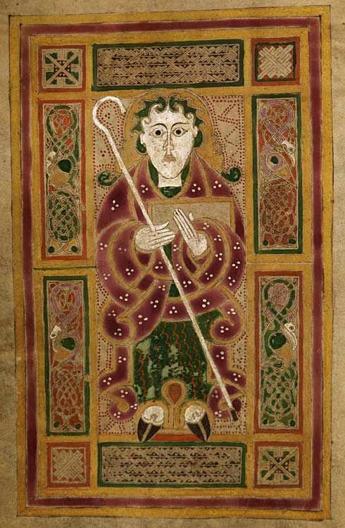

🎁 Buying this as a gift? Give the gift of belonging to an ancient Irish clan — signed by the Chief, posted worldwide.
Those who inspire us, those we remember
The Ó Comáin name is bound to one of Ireland's great early medieval saints — Saint Commán — whose legacy is written in stone, in place names and in the living tradition of the Irish church across Connacht and Munster.
You may encounter references to "Saint Commán of Roscommon" and "Saint Commán of Kinvara" as if they were two distinct individuals. The Dictionary of National Biography (1887) is clear on this point: these are one and the same saint. The entry for Commán of Roscommon explicitly states that he "also founded the church of Ceann Mara, now Kinvara" — placing both foundations with a single person. His death is recorded in the Annals of Ulster at 747 AD. The Kinvara church simply represents a second foundation by the same saint, whose ministry extended from Roscommon to the very shores of the Burren, the heartland of the ancient Chiefdom of Tulach Commáin.
Saint Commán is the founder of Roscommon — Ros Commáin, meaning "Commán's Wood" — and patron saint of County Roscommon, whose name the county and town carry to this day. His death is recorded in the Annals of Ulster at 747 AD, making him one of the most firmly dateable saints of early medieval Ireland.
The Dictionary of National Biography (1887) records that Saint Commán "also founded the church of Ceann Mara, now Kinvara" — placing his foundation directly on the southern edge of the Burren, within sight of the ancestral chiefdom capital of Cahercommane. Whether the saint and the chief shared family ties or merely the ancient name Commán, the convergence of saint and chiefdom in the same landscape is a remarkable feature of the clan's heritage.
His memory is preserved in the dedicated book Remembering St. Comán — Patron Saint of Ros Comáin by Noel Hoare, published by the Rathcroghan Heritage Centre.
Remembering St. Comán — Noel HoareThe Grokipedia article on Saint Commán of Kinvara explores the saint's ancient church foundation at Kinvara on the southern shore of Galway Bay — the ecclesiastical site most directly connected to the Burren landscape of the chiefdom.
Grokipedia — Saint Commán of Kinvara
His greatest joy was making others happy.
His philosophy: love.
Ronan's love for his extended family, and for all people, inspired the rebirth of Clan Ó Comáin. It is in his memory and in his spirit of joy and connection that this clan has been revived — bringing together the descendants and friends of the Ó Comáin name from across the world.
Ronan was the second son of Fergus Commane, Chief of Clan Ó Comáin. He passed to his eternal reward in 2023. He is remembered in every gathering of this clan, and in every act of welcome extended to those who join us.
Clan Ó Comáin maintains a record of members of the clan who have passed. To submit an obituary notice for a clan member, please contact us at clan@ocomain.org.
To add an obituary for a clan member, please email the name, dates and a brief tribute to clan@ocomain.org and it will be added to this page.